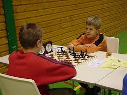

Om Magnus Carlsen
Carlse ble født i 1990 i Tønsberg. Han begynte å lære sjakk i en alder av fem, men viste ikke stor interesse før han så sin eldre søster spiller bra. Etter å oppnå sitt mål om å slå sin søster og deretter far, vokste hans entusiasme for sjakk.
I januar 2013 Magnus brøt Garry Kasparov rekord med ti poeng som oppnådde den høyeste rating noensinne med 2862. Han økte sin egen rekord med 10 poeng, noe som gjør 2872 og deretter til 2881.
Magnus 'ble verdensmesteren i sjakk i november 2013. Han beseiret Viswanathan Anand 6,5-3,5 i Chennai, India. Tjueto år gamle Magnus vant spill 5, 6 og 9 og vant tittelen med et hardt kjempet uavgjort i 10 runde.